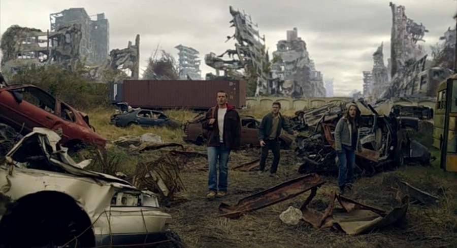
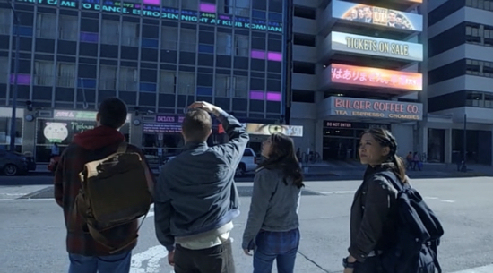
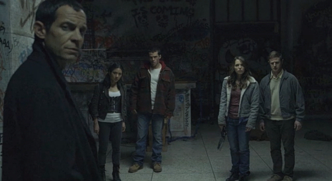

Parallels is an American science fiction film, distributed by Zero Day Fox (subsidiary of Twentieth Century Fox, concentrating on production and distribution of television shows, webisodes and digital television content) that was released on Netflix streaming service.
Ronan (Mark Hapka) and Beatrix Carver (Jessica Rothe) are two estranged siblings brought back together by a mysterious message from their father Alex. Curious, they separately arrive at their family’s house, where they find their father missing, though Ronan recovers a strange, ball-shaped device from the boot of their father’s car. Harry (Eric Jungmann), Beatrix’s friend, who just happens to walk by as they search the garage, joins the siblings in their attempt to locate their father. They contact the police, but Captain Stone (Davi Jay), head of the local police department, offers little help, as no crime was committed. He however points them in the direction of the building mentioned by their father.
The three arrive at the building but find it abandoned, dilapidated, with interior walls covered in graffiti describing what purports to be alternative Earths. Dismissive of the seemingly nonsensical scribbles, the group wants to leave, but upon exiting the building, they find themselves in a barren landscape with the remains of buildings in the distance. Remarkably, while much of the city lies in ruins, ‘their’ building is completely untouched. The friends make little sense of this, but when they observe a roving party on a pickup truck shooting down unarmed civilians, they don’t take any chances and flee back into the relative safety of the building, but not before being spotted by the armed men.
Inside, they encounter Polly (Constance Wu), who explains to the bemused trio that while they did not move from the place where they entered the building, they, together with structure, were somehow transported to an alternative reality. Polly, who seems to be quite at home in the building, further clarifies that according to the many-worlds theory, we live in a universe where all possible futures are played out. Thus, for each and every choice we, or someone else makes, there is a world, different from ‘our’ own. The differences can range from slight (Coca Cola was never invented, otherwise everything stays the same) through more radical (your parents never met, so you were never born) to drastic – as the variant of the Earth they just saw – the world devastated by nuclear warfare.
Polly doesn’t know who built the structure or for what purpose, but one thing is certain – in the endless chain of alternative universes, the building is the only constant, existing in all realities, and on all alternative Earths, no matter how different they are. Polly adds that they are free to explore the varying realities, but warns that the building makes the ‘jump’ every 36 hours, and if they don’t return back within this time, they will get stuck in that particular version of reality in which they exited the building. She also recommends to stay put and do not interact with the locals in the hazardous worlds, such as the one they are in now, and wait for the next ‘jump’.
Her warning comes too late though, as the men who saw them earlier search the building, find them, and escort them to the local settlement. Once there, Polly takes charge of the situation and convinces their captors that they are merely confused travellers who lost their way. Alas, Harry quickly blows their cover story when, recognising in the local leader Captain Stone, he addresses the former policeman not only by his name but also by his rank.
Stone, suddenly distrustful of the strangers (he does not know Harry or his friends in this version of reality) who know his name and former occupation, detains them, places Polly under lock and key, and orders Tinker (Michael Monks), the local gadget-maker (who prides himself with an impressive array of inventions, ‘universal calibre gun’ being one of them), to interrogate Ronan and Beatrix. Tinker tells the siblings that a man who came out from ‘their’ building set off the nuclear explosion which killed his family and caused the terrible devastation they see. He then shows them the footage of a man carrying a suitcase nuke, exiting the building and Ronan and Beatrix are horrified to recognise the individual – it is their lost father.
The siblings manage to overpower their torturer, free Polly, and make their way back to the building in a stolen car, with revengeful Tinker hot on their heels with an armed nuclear device. The man, seeking to avenge his family, places the nuke in the front of the structure and manages to get inside, only seconds before the building makes another ‘jump’.
This time, the quartet find themselves in a futuristic, highly technologically advanced, version of the Earth. While Ronan and Polly leave to explore Alex’s house, Beatrix and Harry decide to visit Harry’s flat and, after going through his computer, discover that, in this world, he is a wealthy and corrupt corporate lawyer, married to Beatrix (with whom is Harry secretly in love in their ‘home’ world). While in his father’s house, Ronan shows Polly the ball-shaped device he found here earlier, and she remarks that the item could only be from the ‘core world’, where the building was constructed. They flee from the house after they find themselves ambushed by a group of rough-looking armed men.
In the meanwhile Tinker steals the identity of his other ‘I’ from this version of reality and buys out an entire electronics shop in order to assemble a hacking device to try and take control of the building.
Back in the building, Tinker uses the device and successfully hacks into the building’s system, though it is unclear if he can control which versions of reality the following ‘jumps’ will lead to. The lift, which until now did not work, suddenly opens, revealing Alex Carver (Yorgo Constantine), who steps out, seemingly impressed by the Tinker’s hacking device.
Tinker is demanding to know who is controlling the building and for what purpose and Alex directs him to the lift, saying that he will find all the answers at the top floor of the building. While Tinker ascends in the lift, Alex reveals to his shocked children that neither he nor their mother were born on what they perceive as their ‘home’ world. After a while Tinker reappears from the lift, yelling that there is nothing on the top floor, after which Alex shoots him dead in cold blood. Alex then exits the building through the main door, but not before telling Ronan and Beatrix that they must find their mother, who, according to them, is dead, in order to return to the ‘core world’.
The building performs yet another ‘jump’ and Ronan, Beatrix and Harry head towards the bright light shining through the entrance, to face whatever world awaits them outside, knowing that there is only a very slim chance of them ever returning to their ‘home’ reality…

At its end, Parallels feel unfinished, as there is no plot resolution and many question are left unanswered (what is the use of that strange ball Ronan found in the boot of his father’s car, or, who were the mysterious hitmen who ambushed him and Polly in his father’s house). Which is understandable, considering the film started its life as a pilot for a planned television series, and only when the studio decided not to pick it up for a full series, the pilot was released on Netflix as a stand-alone movie.
TRIVIA: The light-blue pyramid-shaped skyscraper, that you can see in the skyline of the futuristic version of the city, is the real-life Ryugyong Hotel located in Pyongyang, North Korea.